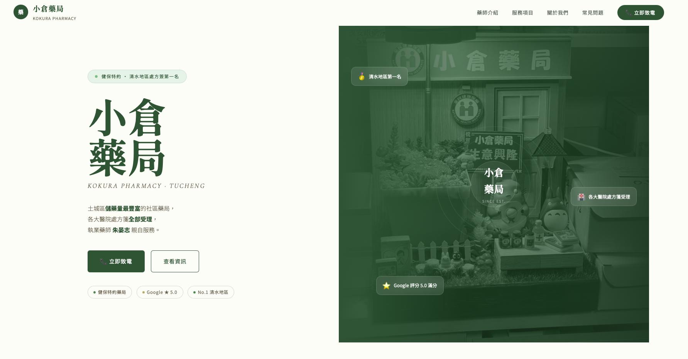
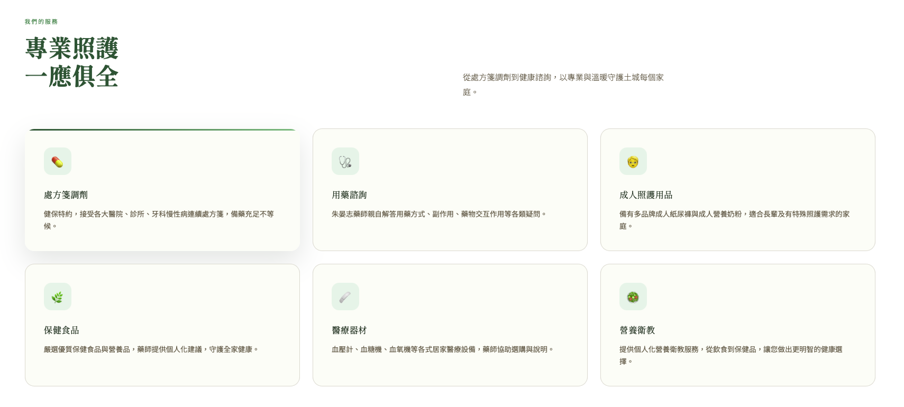
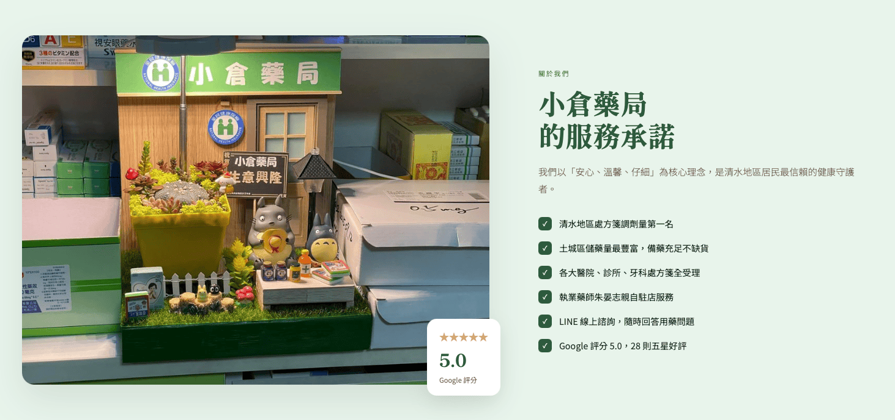

01 — 專案背景
在地藥局的專業，也需要被線上看見
小倉藥局是深耕社區的在地藥局，服務靠的是專業與口碑。但在線上，藥局的資訊只散落在地圖評論與口耳相傳之間——營業時間、服務項目、能不能諮詢，客人想確認都沒有官方管道可以查。
這個專案要為藥局建立一個官方入口：資訊清楚、視覺親切，讓熟客查資訊方便、新客第一眼就感到安心與信任。
專案核心：藥局官網的關鍵是「安心感」——資訊要正確清楚，視覺要親切不冰冷，讓客人在走進藥局之前，就已經開始信任這裡。
02 — 問題與痛點
客人想了解藥局，卻沒有地方可以查
痛點 1營業時間、公休資訊沒有官方管道，客人常撲空或需要打電話確認。
痛點 2藥局提供的服務項目外界不清楚，許多專業服務因為沒被看見而少有人使用。
痛點 3客人有用藥疑問時，除了親自跑一趟之外，缺乏線上諮詢的入口。
03 — 解法與設計思路
用親切安心的設計，承載專業的內容
視覺以「親切、安心、專業」為主軸：柔和的配色、清楚的字級與充足的留白，貼合藥局與社區客群的調性——包含許多使用手機的長輩客群。
內容架構把客人最常需要的資訊放在最容易找到的位置：營業時間、服務項目、藥局位置與諮詢管道，一頁瀏覽就能全部掌握。



HTMLCSSJavaScriptRWDLocal BusinessBrand Design
04 — 我的負責範圍
從需求訪談到上線部署，一人全程負責
- 1與藥局訪談，了解服務項目、客群樣貌與最常被詢問的資訊
- 2規劃資訊架構，把營業資訊、服務、位置與諮詢整理成清楚的層次
- 3設計親切安心的視覺風格——柔和配色、清楚字級、舒適留白
- 4以 HTML / CSS / JavaScript 手工切版開發，載入輕快
- 5RWD 響應式設計，特別確認長輩常用的手機瀏覽體驗
- 6部署上線並交付可自行維護更新的網站結構
05 — 設計重點
為社區藥局量身設計的三個關鍵
設計重點安心感優先：醫藥相關的網站，視覺的信任感比華麗更重要。柔和的色調與整齊的資訊呈現，讓客人第一眼就放心。
設計重點長輩友善：社區藥局的客群有大量長輩，字級、對比與按鈕大小都特別考量，手機上也能輕鬆閱讀與操作。
設計重點諮詢入口明確：把「有問題找藥師」的入口設計得清楚顯眼，降低客人開口詢問的門檻，也把線上流量導回實體服務。
06 — 專案成果 / 價值
官網上線後帶來的實際改變
品牌成果
官網上線後，小倉藥局有了正式的線上門面。客人查營業時間、了解服務、找諮詢管道都有了官方入口，撲空與重複電話詢問減少，藥局的專業服務也被更多人看見。
後續延伸：網站架構可持續擴充——健康資訊專欄、活動公告、LINE 官方帳號串接，都能在現有基礎上直接加入。